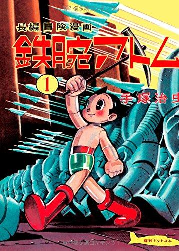
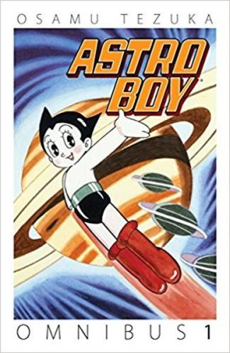
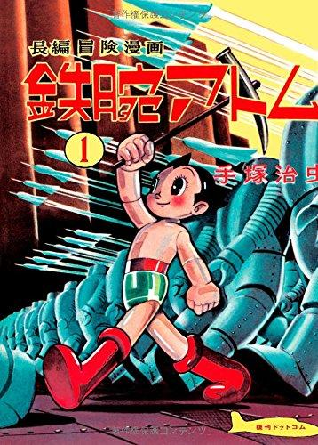
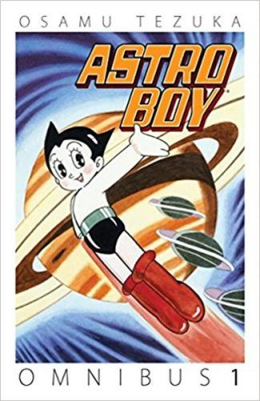

 Astro Boy, known in Japan by its original name Mighty Atom, is a Japanese manga series written and illustrated by Osamu Tezuka.
It was serialized in Weekly Shonen Magazine from 1952 to 1968. The original 112 chapters were collected into 23 tankōbon volumes by Kodansha. The English volumes would not become available until 2002 when the rights were licensed by Dark Horse. The story follows the protagonist, Astro boy an android with human emotions who is created by Umataro Tenma after the death of his son, eventually Astro is sold to a robot circus run by Hamegg but, is saved from his servitude by Professor Ochanomizu. Astro becomes a surrogate son to Ochanomizu who creates a robotic family for Astro and helps him to live a normal life like an average human boy, whilst accompanying him on many adventures.
Astro Boy has been adapted into three anime series produced respectively by Mushi Production and Tezuka Productions, with a fourth series in development. The manga was originally produced for TV as Astro Boy, the first popular animated Japanese television series that embodied the aesthetic that later became familiar worldwide as anime. After enjoying success abroad, Astro Boy was remade in the 1980s as New Mighty Atom, known as Astroboy in other countries, and again in 2003.
In November 2007, he was named Japan's envoy for overseas safety. An American computer-animated film based on the original manga series by Tezuka was released on October 23, 2009. In March 2015, a trailer was released announcing a new animated series. The success of the manga and anime series led it to becoming a major media franchise consisting of films including a major motion picture, a number of soundtracks and a library of Video Games. The series was also among the first to embrace mass merchandise including action figures, collectible figurines, food products, clothing, stamps and trading cards. The franchise has earned 3 billion dollars making it one of the highest grossing anime media franchises.
Astro Boy has become one of the most successful manga and anime franchises in the world. The combined 23 tankōbon volumes have sold over 100 million copies worldwide making it the tenth best-selling manga series of all time. The 1963 anime series was an astounding success it became a mainstream hit on television in both Japan and the United States. Astro Boy has been praised for its importance in developing the anime and manga industry. It has been featured on numerous greatest anime of all time lists and has partially inspired other authors in the creation of influential manga.